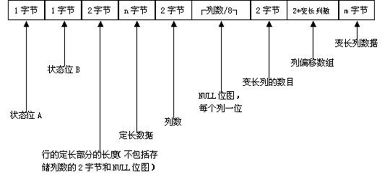
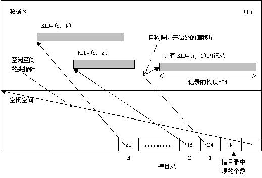
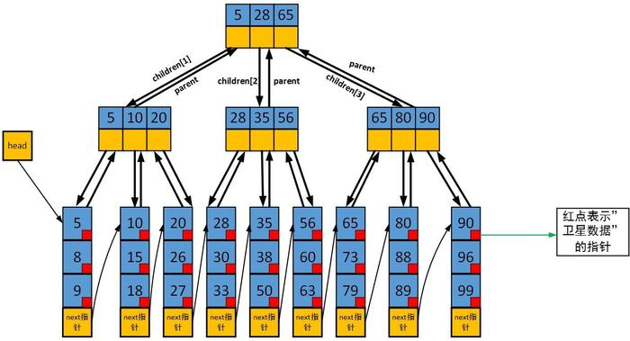

数据库项目文档
2015011343 陈宇
2015011337 季智成
实现的功能
基本功能：数据的增删查改，创建和删除数据库和数据表
索引：B+树索引，唯一键值hash，复键值hash
查询优化：对于单表查询使用已有索引进行估价，对于多表查询使用拓扑排序确定一个最佳的查询顺序，对于外键和主键有优化
外键约束：插入时检查外键是否存在，删除时一并删除相关联的数据
支持多种类型：
- #define INT_TYPE (“int”)
- #define CHAR_TYPE (“char”)
- #define VARCHAR_TYPE (“varchar”)
- #define DATE_TYPE (“date”) // DATE储存为time_t
- #define FLOAT_TYPE (“float”)
- #define DECIMAL_TYPE (“decimal”) // 定点数，两个int，9位
支持三个或以上表的连接：对于有外键约束的查询有优化
聚集查询：支持AVG,SUM,MIN,MAX,COUNT
模糊查询：转化为正则表达式判断
散列索引：对主键建有两种类似的hash索引
属性域约束：会在插入和修改数据的时候检查值是否符合要求
GUI：实现了web版本的GUI
系统结构设计

主要模块设计原理
基础数据类型
在系统设计中，为了性能和易用性考虑，在代码中大量使用了C++11的shared_ptr，由此可以不用担心拷贝时的高复杂度和内存泄露，如下：
// 页式文件
class File
{
public:
typedef shared_ptr<File> ptr;
};并且，在系统中有很多地方需要将数据序列化为二进制数据，并且还需要记录数据的长度，所以考虑用vector和unsigned char组合来实现：
typedef shared_ptr<vector<uint8>> data_t;
bool equals(data_t a, data_t b);
data_t alloc_data(int size);
data_t clone(data_t data);
data_t int_data(int value);
data_t float_data(float value);
data_t string_data(string str);
data_t time_data(time_t value);这里定义的data_t是系统中很多进行数据交互的类型，包括将记录序列化为二进制数据和索引储存的key和value。
文件系统
由于在项目的某些设计中对页式文件系统有一些特殊的要求，所以并没有使用课程推荐的页式文件系统，而是自己实现了一个简单的版本。
主要功能来说，以8K的单位进行读写，并且会将数据缓存到内存中，在必要时将修改过的数据写会到磁盘上：
// disk/file.h
// 页式文件
class File
{
public:
File(string filename);
~File();
// 重置下一页
void ResetNextPage(int page = 0);
// 读取一页，若该页不存在则返回全0的数据
data_t ReadPage(int page, bool read_only = false);
// 读取下一页，若该页不存在则返回全0的数据
data_t NextPage(bool read_only = false);
// 新页，在最后
data_t NewPage(bool read_only = false);
// 返回当前页
int CurrentPage();
// 是否结束
bool End();
void MarkDirty(int page);
void Flush();
};此外，还添加了很多和磁盘交互的接口，比如创建文件夹等：
void mkdirp(const string& path);
void mkfile(const string& filepath);
void rmdir(const string& path);
void rmfile(const string& filepath);
void cpfile(const string& src, const string& dst);
bool exists(const string& path);
int filesize(const string& filepath);
vector<string> listdir(const string& path);
string path_join(const string& a, const string& b);
string get_cwd();记录管理模块
数据库/数据表结构定义
在本系统的设计中， 一个数据库对应与一个文件夹，同一个数据库中的所有数据都储存在此文件夹中 。在该目录下，存在一个ddf.json的文件，此文件以JSON个是记录了该数据库的所以结构信息，包括有哪些表，每个表有哪些列及其类型，每个表有哪些主键以及外键约束。
比如，描述一个列需要记录的信息如下：
// ddf/coldesc.h
// 列描述类
class ColDesc
{
public:
TableDesc* td;
string columnName;
string typeName; // 小写
size_t length; // 长度，对于某些类型时长度限制(varchar)，对于某些类型时指定长度(char)，对于int等定长数据应该恒为1
size_t display_length; // 展示的长度，对int有效
bool allow_null;
bool indexed;
bool is_oneof_primary;
bool is_foreign_key;
string foreign_tb_name;
string foreign_col_name;
vector<Json> scope_values;
};这些信息应该在创建数据库之后，插入数据之前确定好， 由于每个记录被序列化的结果与表结构相关，所以原则上不允许一个表在有数据的情况下修改表结构（添加列等）。
序列化之时，每个列描述为一个Json对象，每个表描述为一个Json数组，每个数据库描述为一个Json数组，最终将数据库的结果写入ddf.json即可。
在ddf/typeinfo.h中，还定义了目前数据库可以支持的数据类型，以及不同数据类型的表现（是否定长，数据大小等）：
// ddf/typeinfo.h
#define INT_TYPE ("int")
#define CHAR_TYPE ("char")
#define VARCHAR_TYPE ("varchar")
#define DATE_TYPE ("date") // DATE储存为int
#define FLOAT_TYPE ("float")
#define DECIMAL_TYPE ("decimal") // 定点数，两个int，9位
enum type_t {
INT_ENUM = 0,
CHAR_ENUM,
VARCHAR_ENUM,
DATE_ENUM,
FLOAT_ENUM,
DECIMAL_ENUM,
};
size_t type_size(const string& typeName); // 该类型单个元素的大小
bool is_type_fixed(const string& typeName); // 是否是定长类型
type_t type_enum(const string& typeName);
string type_name(type_t type_enum);在系统中，不管是何种类型，统计储存为上文中的data_t，然后再通过type_t标识其类型 ，这样做的好处是在很多与具体类型无关的地方（比如索引中），可以忽略掉数据类型而只用关注与data_t其二进制数据本身。
同时，也配套定义了相关处理函数：
// ddf/typeinfo.h
size_t type_size(const string& typeName); // 该类型单个元素的大小
bool is_type_fixed(const string& typeName); // 是否是定长类型
type_t type_enum(const string& typeName);
string type_name(type_t type_enum);
// return a - b;
int compare(type_t type, data_t data_a, data_t data_b);
// 序列化为可以输出的内容
string stringify(type_t type, data_t data);数据储存与序列化
考虑到存在数据的时候其表结构不会改变，所以可以对应与表结构，用一个数组储存每列的之，即：第0列的数据储存在数组第0个位置，第1列的数据储存在数组第1个位置。
在系统中，一个记录用一个Record表示：
// ddf/record.h
// 描诉一个记录
// 注意：使用Record的时候要求td指向的TableDescription对象必须存在，不能被销毁
class Record
{
public:
TableDesc* td;
Record(TableDesc* td);
~Record();
data_t PrimaryKey();
void SetValue(const string& columnName, data_t data);
void SetValue(int columnIndex, data_t data);
data_t GetValue(const string& columnName);
data_t GetValue(int columnIndex);
void SetInt(const string& columnName, int value);
// ...
private:
vector<data_t> values; // 每列的值
};每个表的一个记录在内存中有其结构，但是最终储存在文件中只能储存为一堆二进制数据，所以在记录与二进制数据之间存在转换过程。
为了支持变长数据，同时也为了鲁棒性，我们最终决定采用课件上介绍的序列化方式：

序列化和反序列化的代码在ddf/record.cpp中可以查看到：
// ddf/record.h
// 描诉一个记录
// 注意：使用Record的时候要求td指向的TableDescription对象必须存在，不能被销毁
class Record
{
public:
// 生成序列化的数据
data_t Generate();
// 恢复
void Recover(data_t data);
};记录存储方式
页式文件系统是以页为单位进行储存的，所以在其基础上，我们还需要封装一个以 二进制记录 为单位进行储存的数据结构，并且每个记录可能长度不相同，我们将其命名为 槽式文件系统 。
简单起见，我们采用了课件中的储存方式。对于删除，为了减小数据移动带来的RID改变，所以我们只会在相应的位置加上标记，并不会正真删除：

具体实现代码在datamanager/slotsfile.cpp中：
// datamanager/slotsfile.h
// RID = page_id + slot_id, 均从0开始
#define RID(page_id, slot_id) int( (int(page_id) << 13) | int(slot_id))
#define RID_PAGE_ID(rid) int(int(rid) >> 13)
#define RID_SLOT_ID(rid) int(int(rid) & ((1<<13)-1))
class SlotsFile
{
public:
SlotsFile(const string& filename);
// 插入，返回rid
int Insert(data_t data);
// 删除，不会移动其他数据
void Delete(int rid);
// 获取，如果没有则返回nullptr
data_t Fetch(int rid);
// 开始的数据，如果没有则返回nullptr
data_t Begin();
// 当前rid
int CurrentRID();
// 下一个数据，如果没有则返回nullptr
data_t Next();
};值得一提的是， 该槽式文件系统以二进制记录为单位进行储存，但是并不仅仅被用于储存表的数据，在索引部分也会用到。
索引模块
变长数组文件系统
在索引模块中，主要功能就是根据某个key查找对应的rid，如果允许key重复的话还需要支持查找一个rid列表，为了支持key重复的查询，需要将相同的key对应的rid储存在磁盘中并且要连续，所以需要设计一个”变长数组文件系统”来实现这个功能。
考虑到数组的大小会经常变大，而且添加多余删除，所以使用倍增的方式扩展空间：当剩余空间不足时，新开辟一块大小为所需两倍的空间。
所以，在磁盘上的储存结构为：第一个int表示此数组已经使用了多少个，第二个int表示该位置总共有多少空间可用，接下来一次储存数组的每个数据。
// datamanager/vectorfile.h
typedef shared_ptr<vector<int>> vector_t;
// 储存int数组
class VectorFile
{
public:
VectorFile(const string& filename);
~VectorFile();
int NewVector(int value); // 新数组，返回位置
vector_t Fetch(int pos); // 获取对应位置的数组
int Save(int opos, vector_t data, bool append_only = false); // 储存，append_only=是否只有增加
void Flush();
private:
struct header_t
{
int valid;
int empty_pos;
};
struct vec_h_t
{
int size, capacity;
};
};B+树索引
B+树是数据库系统中常用的一种索引，其支持多种查询方式，而且由于其数据都储存在叶节点中，可以很方便的维护节点之间的链接关系，便于遍历。
在我们的系统中，采用的B+树类似下图，不过每个节点的值储存的是其子树的最大值：

在我们的设计中，为了支持对变长字段建索引，所以单独用一个“槽式文件”储存关键字，为了支持重复的关键字，用“变长数组文件”储存相同关键字的rid。
如果创建一个文件名为name.index的B+树索引，实际创建的文件包含：
name.index: 储存B+树的结构name.index.key: 槽式文件，储存B+树的关键字name.index.data: 变长数组文件，储存B+树叶节点的rid数组
B+树的代码实现在indices/bplustree.h和indices/bplustree.cpp中:
// indices/bplustree.h
/**
* B+树
* 第0页是头
* 关键字存其对应儿子的最大值
* */
class BPlusTree
{
public:
BPlusTree(const string& filename, type_t type);
~BPlusTree();
static void RemoveIndex(const string& filename);
void Debug();
// 插入
void Insert(data_t key, int value);
// 删除
void Delete(data_t key, int value);
// 键是否存在
bool IsKeyExists(data_t key);
// 总数
int TotalCount();
// 小于的数量
int LTCount(data_t key);
// 等于的数量
int EQCount(data_t key);
// 小于等于的数量
int LECount(data_t key);
Iterator Begin();
// 第一个>=key的位置
Iterator Lower(data_t key);
// 第一个>key的位置
Iterator Upper(data_t key);
};只有通过[CREATE INDEX]语句才会创建B+树索引，主键不会创建B+树索引。
散列索引
B+树索引支持各种查询，但是其缺点是速度慢，实现复杂。而散列索引则相反，其速度快，实现简单，但是只支持单值查询。
在系统中我们采用的hash算法是将数组的每个字节当作数字，以此乘以P再求余一个给定的数M：
// indices/hashtable.cpp
int HashTable::hashValue(uint8* key, int key_bytes, int P, int M)
{
int ret = 0;
for(int i = 0; i < key_bytes; i ++)
{
ret = (ret * P + (int)key[i]) % M;
}
return ret;
}在查询中，采用“双向平凡探测法”。
为了支持数据的增长，散列算法会自动扩容，在设计中，当使用率达到75%时，就会将容量加倍，然后将数据迁移到新文件中。
// indices/hashtable.h
// hash表，key唯一
class HashTable
{
public:
HashTable(const string& filename, int key_bytes);
~HashTable();
void Insert(data_t key, int value); // 插入
void Delete(data_t key); // 删除
bool Exists(data_t key); // 是否存在
int Fetch(data_t key); // 获取
int TotalRecords(); // 记录总数
};此外，上面介绍的散列只允许一个key对应一个value，为了实现一个key对应多个value的情况，特地设计了可以重复的MultiHashTable。
MultiHashTable和HashTable的算法基本相同，使用相同的hash算法，都使用“双向平凡探测法”，都在75%的是否扩容，区别之在于MultiHashTable会采用一个“变长数组文件”储存相同key的value数组：
// indices/multihashtable.h
// hash表，可以有多个相同的key
class MultiHashTable
{
public:
MultiHashTable(const string& filename, int key_bytes);
~MultiHashTable();
void Insert(data_t key, int value);
void Delete(data_t key, int value);
int Count(data_t key);
vector_t Fetch(data_t key);
int TotalRecords();
};散列索引主要用在数据表的主键上，无法通过[CREATE INDEX]创建，不支持删除。
如果有如下语句：
CREATE TABLE customer(
id INT(10) NOT NULL,
name VARCHAR(25) NOT NULL,
gender VARCHAR(1) NOT NULL,
PRIMARY KEY (id)
);则会对id字段建立一个HashTable。
如果有如下语句：
CREATE TABLE price(
website_id INT(10) NOT NULL,
book_id INT(10) NOT NULL,
price FLOAT NOT NULL,
PRIMARY KEY (website_id,book_id),
FOREIGN KEY (website_id) REFERENCES website(id),
FOREIGN KEY (book_id) REFERENCES book(id)
);则首先会对website_id和book_id的“联合属性”（就是将其拼起来）建HashTable，然后会对website_id和book_id分别建立MultiHashTable。
散列索引的特性在于，如果知道了某个记录的任一主键的值，都可以通过查询HashTable或者MultiHashTable非常快的获取相关记录，在查询优化时我们将看到其作用。
查询解析模块
为了查询解析模块的鲁棒性，我们的系统采用lex+yacc的组合解析查询，其文法可在frontend/parse.y和frontend/scan.l中查看。
在frontend目录中，核心功能就是解析查询命令，将其瓶装成符合engine的格式并提交，engine模块则会根据不同的命令选择最佳的方式执行。
系统管理模块
engine目录即是整个系统的核心，其组合了各个模块，最终将命令与操作对接起来。
创建
操作数据库的第一步是创建数据库，并定义好相关表结构。
数据库操作接口如下：
// engine/dbop.h
void show_databases(Context* ctx);
void create_database(Context* ctx, const string& db_name);
void drop_database(Context* ctx, const string& db_name);
void use_database(Context* ctx, const string& db_name);表操作接口如下：
// engine/tableop.h
void show_tables(Context* ctx);
void create_table(Context* ctx,
const string& tb_name,
const vector<ColumnDefine>& cols,
const vector<string>& primary_cols,
const vector<ColumnForeign>& foreign_cols,
const vector<ScopeLimit>& scope_limits);
void drop_table(Context* ctx, const string& tb_name);
void desc_table(Context* ctx, const string& tb_name);*数据类型转换
在很多时候，需要进行数据转换，这是由于输入的数据类型很少但是储存支持的数据类型，比如：输入中的string类型可以转换为储存的char/varchar/date类型，输入的int类型可以转化储存的int/float/decimal类型，而输入的string还可以在查询中转化regex类型。
所以，在很多操作进行之前，需要对输入的数据进行转化，并进一步变成可以储存和参与比较的data_t类型，同时，类型判断也是在这一步进行的。
在engine中，输入的值用Value类表示：
// engine/crudop.h
class Value
{
public:
enum ValueType { VALUE_INT, VALUE_STRING, VALUE_FLOAT, VALUE_NULL,
VALUE_DECIMAL /*定点数，只能转换*/,
VALUE_REGEXP /*正则表达式，只能转换*/
};
ValueType value_type;
data_t data;
string origin_value;
regex reg;
static Value int_value(const string& value);
static Value float_value(const string& value);
static Value string_value(const string& value);
static Value null_value();
Json basic_to_json();
bool string_to_date();
void int_to_float();
void float_to_decimal();
void int_to_decimal();
void string_to_regexp();
string stringify() const;
};同时，在engine/helper.h中提供了一个用于转换和判断类型的函数：
// engine/helper.h
// 类型检查
bool value_type_trans_ok(type_t type, Value& value);插入
插入数据的流程如下：
数据列数目检查
类型检查
数据合法性检查（外键依赖，域约束等）
在数据文件中添加记录
在相关索引文件中添加记录
// engine/crudop.h
void insert_op(Context* ctx, const string& tb_name, vector<vector<Value> > values_list);删除
查询的处理流程如下：
查询条件的合法性检查（类型检查等）
获取满足条件数据的rid列表
删除满足条件的结果
查询上一步的外键依赖关系，如果有依赖则跳到3
外键约束除了插入的时候对应记录必须存在外，还要求在对方删除的时候一并删除有依赖关系的数据，并且此操作可能会出发很多层，所以第3步和第4布会多次执行，在代码中使用递归来实现。
比如：
CREATE TABLE price(
website_id INT(10) NOT NULL,
book_id INT(10) NOT NULL,
price FLOAT NOT NULL,
PRIMARY KEY (website_id,book_id),
FOREIGN KEY (website_id) REFERENCES website(id),
FOREIGN KEY (book_id) REFERENCES book(id)
);在删除website的id为10的记录之后，同时也要删除price表website_id也为10的记录。
// engine/crudop.h
void delete_op(Context* ctx, const string& tb_name, vector<Condition> conditions);更新
更新数据处理流程：
查询条件的合法性检查（类型检查等）
更新语句和发现检查（类型检查等）
获取满足条件数据的rid列表
对于每条满足条件的记录，删除原记录并插入新记录，如果新记录不合法则不修改
// engine/crudop.h
void update_op(Context* ctx, const string& tb_name, vector<Assignment> assignments, vector<Condition> conditions);查询
查询的处理流程：
为没有指明表名的列查询一个合法的表名
检查查询条件是否合法（类型检查等）
对查询的表排序，确定一个最优查询顺序（在查询优化部分细讲）
确定每个表的依赖关系
对没有被依赖的表查询出结果
分析
Selector确定要查询那些记录为了支持多表查询，递归搜索每个表的每个合法记录，如果当前表和前面的表有依赖关系则直接通过查询索引搜索（在查询优化部分细讲）
输出查询结果
// engine/crudop.h
void select_op(Context* ctx, Selector selector, vector<string> tables, vector<Condition> conditions);*查询优化
查询优化分为两类：一类是单表查询优化，另一类是多表查询优化。但是这两类并不冲突，可以同时使用。
对于单表查询优化， 由于条件与条件之间只有AND关系，所以条件越多满足的记录就越少。 考虑到某些表我们建有索引，而对建有索引的字段进行查询是可以预估有多少个满足条件的记录，所以对于单表查询可以做的优化就是 枚举每个条件，选择建有索引并且预估结果最少的条件先查询，然后再对其他条件进行判断。
在engine/helper.h中提供了一个函数完成此功能：
// engine/helper.h
// 统计满足条件的数量，无法统计则返回INF
int calculate_condition_count(TableDesc::ptr td, const Condition& cond);比如如下查询:
SELECT * FROM website WHERE name='tb' AND id=1000;由于我们对id建了索引，所以可以预估满足id=1000的记录的数量，对这些记录再判断name='tb'，即可查询所有记录。
对于多表查询优化，其核心在于对查询的表重新排序并建立表与表之间的联系，核心规则如下：
优先查询有约束的表
根据外键约束对剩余表进行拓扑排序
根据外键建立表与表之间的联系
比如有如下查询：
SELECT * FROM website, book, price WHERE website.id=price.website_id AND book.id=price.book_id AND book.title='The New Kid on the Block';注意到由于对表book的查询存在一个表内的约束book.title='The New Kid on the Block'，所以将book排在最前面，另外两个表website, price由于website.id=price.website_id的存在，在拓扑排序的时候会建一条从price到website的边，其拓扑排序的结果是price, website。
所以，最终查询的顺序是book, price, website。
然后是建立表与表之间的关系，由于website.id=price.website_id的存在，当price记录已知时即可通过HashTable查询website的值，同样，book.id=price.book_id是的当book已知即可通过MultiHashTable查询price的值，所以只有book是需要单独查询的，而book可以使用单表查询优化。
至此，查询优化结束，对于简单的查询我们的程序已经可以很快的出结果了。
具体查询优化的代码可以查看engine/crudop.cpp，拓扑排序在engine/topsort.h中。
*其他
聚集查询：聚集查询是特殊的查询，目前支持AVG,SUM,MIN,MAX,COUNT查询，目前的办法是在查询过程中统计相关信息，在查询结束后输出
模糊查询：将要查询的字符串转换为正则表达式，然后依次比较
属性域约束：在创建表时通过
CHECK和IN建立约束，然后在插入和修改出检查属性是否符合条件
UI模块
UI模块使用django实现了一个简易的网页。网页中提供一个搜索框用于输入sql语句，UI模块会将此sql语句，加上所处的数据库位置等信息封装成一系列sql语句，交给底层模块获取结果，然后通过网页展示出来。
小组分工
季智成
- 存储模块中与文件系统的交互
- 封装manager类，实现了二进制记录与文件的相关操作，包括插入删除查找。
- 索引模块中b+树的维护
- 实现包括文件与记录的相关操作
- GUI
陈宇
- 页式文件系统
- 数据库结构描述
- 记录的序列化与反序列化，支持多种数据类型
- 前端使用yac+lexer对命令解析
- 核心引擎，和各个模块交互
- 基础数据结构(typedef shared_ptr
参考文献
- 《算法设计》
- 《算法导论》
项目源码
github仓库地址
https://github.com/jzc15/SqlProject
目录说明
datamanager: 数据管理模块，定义了槽文件系统和向量文件系统ddf: 数据库/数据表描诉文件，实现了数据库/表/记录的描述类，实现了记录序列化/反序列化等接口disk: 页式文件系统，以及其他和磁盘交互的接口frontend: 前段模块，负责解析命令json11: 外部引用json模块engine: 核心引擎，负责组合各个模块，完成增删查改等各个指令indices: 索引模块，实现了B+树索引，唯一键值散列索引，可重键值散列索引src: 入口程序，每个文件代表一个可执行文件，包含main以及各个模块的单元测试ui: 网页GUI
环境安装
- 解析部分，使用lex&yacc
> sudo apt-get install flex bison- GUI部分，使用python3，django2.0
> sudo apt-get python3
> sudo apt-get python3-pip
> pip3 install django编译与运行
- 编译
> mkdir build
> cd build
> cmake ..
> make- 运行
> ./main ../dataset/select.sqlGUI运行说明
> cd ui
> python3 manager.py runserver
> # open browser http://127.0.0.1:3000